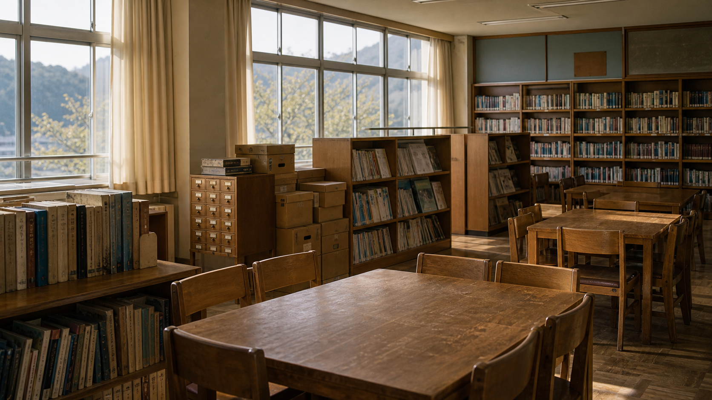

閉校後に整理された図書室と郷土資料棚。
平成18年度 貸出カード抜粋
| 日付 | 児童 | 資料名 | 返却 |
|---|---|---|---|
| 2006/07/10 | 橘健太 | 工作クラブ記録 | 済 |
| 2006/07/14 | 相沢澪 | 雨量観測ノート | 未返却 |
| 2006/07/14 | 相沢澪 | 旧体育館修繕写真 | 未返却 |
| 2006/07/15 | 職員室 | 貸出カード束 H18-7 | 移管 |
展示ケースC 移管メモ
| 保管箱 | 内容 | 状態 |
|---|---|---|
| C-0714 | 雨量観測ノート、旧体育館修繕写真、校外学習しおり | 封緘テープあり |
| C-0920 | 運動会ポスター、保健だより | 公開可 |
C-0714の箱だけ、図書委員の筆跡で「先生に渡す」と鉛筆書きされています。